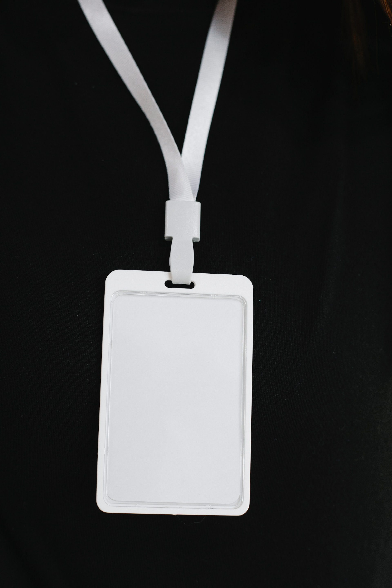

Presenters

Tzviya Siegman
Chair, PWE
Advisory Board
Wendy Reid
Chair, PWE and EPUB3 WG
Chair, PWE
Advisory Board
Chair, PWE and EPUB3 WG
The Positive Work Environment Community Group is responsible for:
The CEPC (Code of Ethics and Professional Conduct) is currently in a revision cycle as we prepare to publish a new version for 2023.
We aim to deliver the new revision to the AB and AC by July, with the goal of publishing the new version in advance of TPAC.
Work is underway, but we can report on some changes.
The new revision of the CEPC will have a new name: The W3C Code of Conduct (CoC).
We have been working with PWE and members of the community to improve the language and clarity of the code.
In this revision, we have shifted the introduction to focus on positive behaviors. All unacceptable behaviors are retained, but we want to ensure that the primary principle is respect.
PWE has been working on a revision of the ombudsperson program. We are expanding the program to include both ombudspeople and mediators.
Ombuds will be internal, but not part of management. Mediators can be external.
Positions will open in June, with interviews by members of PWE and Team beginning in July.
Ombuds and mediators will receive training and be paid for their time.
For more information on the role, please see the ombuds job description.
PWE will be hosting training sessions for chairs, task force leads, or anyone interested in meeting facilitation in June.
This training will be in 2 parts, one pre-recorded session followed by several live interactive sessions.
Information on how to attend will be sent out by email this month.
Several groups have shared what they've done to make their groups more inclusive.
All success stories involve listening. Every group is different. Inclusivity is an ongoing process and means checking in with your group on a regular basis.
We've assembled some collective wisdom we should all follow.
When running a meeting, remind participants of the code of conduct.
As leader, you are the example, be mindful of your behavior.
Don't be afraid to "call in" bad behavior.
Many groups have members from a wide range of countries, time zones, and backgrounds. When planning, don't make assumptions about the needs of others! Ask about time zone or meeting time preferences.
Consider having split meeting times, or adopting more asynchonronous work modes.
Speak slowly, and be open to requests for clarification.
Give time for your participants to process questions or resolutions when doing a vote.
Use clear and readable language when possible.
Turn Zoom captioning on in meetings.
Updates on dates and registration for training will be sent out this month.
If you're interested in our work, please join us!
For questions or feedback on the work of PWE, please go to our repository.